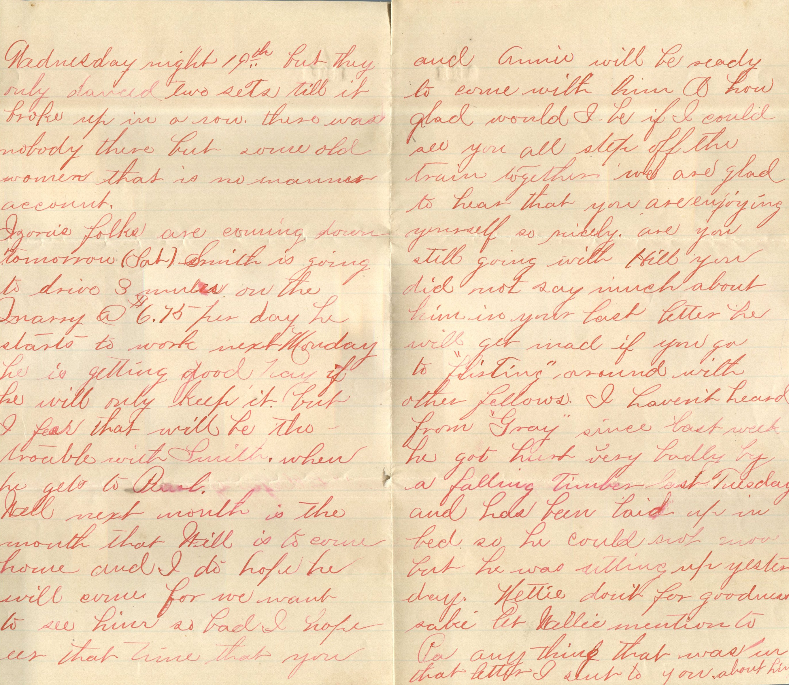
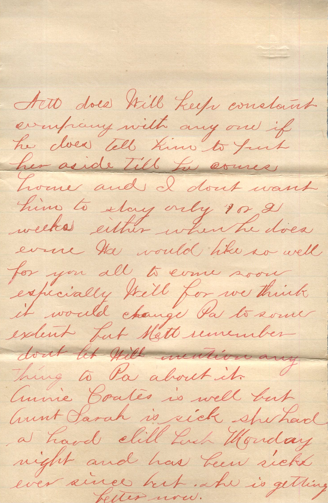
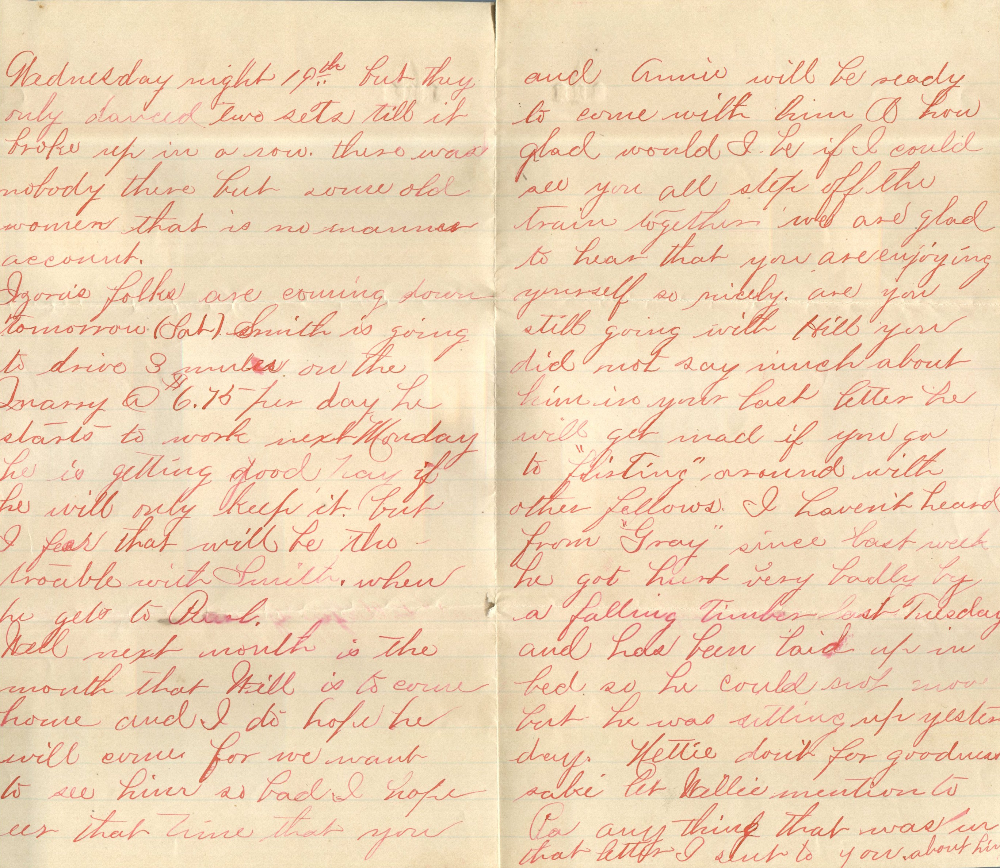
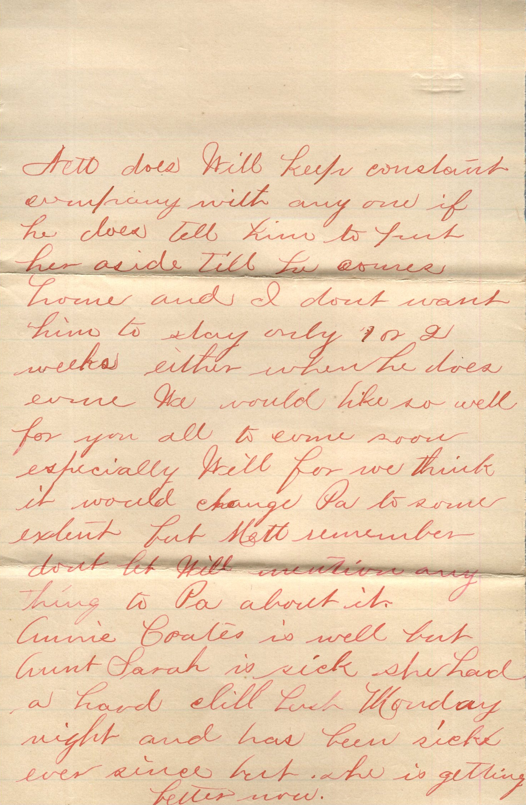
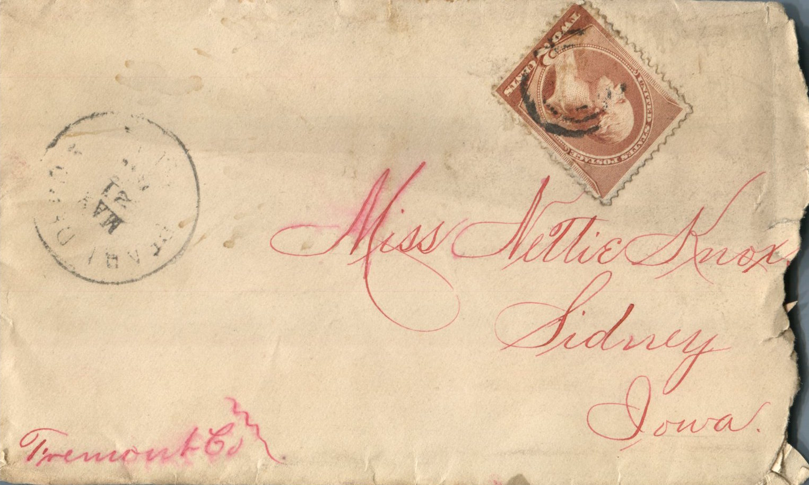
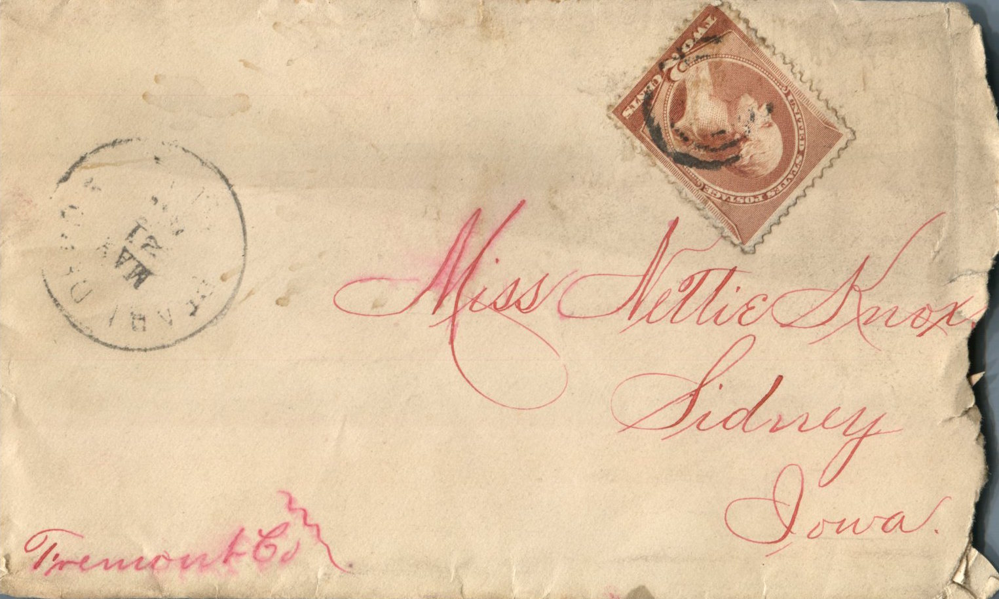

From: Maggie Knox, To: Jeanette Knox Chandler
 
 
From: Maggie Knox, To: Jeanette Knox Chandler Mailed From: Pearl, Illinois on May 21, 1886
Miss Nettie Knox Sidney, Iowa Fremont Co
Pearl, Ills. May 21st, '86 Miss Nettie Knox, Dear Sister, I will now attempt to answer your kids letter also picture which I received 19th I was glad to hear of you all being well as it leaves us at present. Well Nett I think the last picture you sent us was more like you than any yet but Ma likes the head and shoulders the best. Nett what dress did you have on. Well they had or tried to have a dance at Garrison Wednesday night 19th but they only danced two sets till it broke up in a row. There was nobody there but some old women that is no on by my account. Izora's folks are coming down tomorrow (Sat). Smith is going to drive 3 trucks on the Quarry at $6.75 per day. He starts to work next Monday. He is getting good pay if he will only keep it but I fear that will be the trouble with Smith when he gets to Pearl. Well next month is the month that Will is to come home and I do hope he will come for we want to see him so bad. I hope by that time that you and Annie will be ready to come with him. Oh how glad would I be if I could see you all step off the train together. We are glad to hear that you are enjoying yourself so nicely. Are you still going with Hill. You did not say much about him in your last letter. He will get mad if you go to "flirting" around with other fellows. I wanted heard from "Gray" since last week. He got hurt very badly by a falling timber last Tuesday and has been laid up in bed so he could not move but he was sitting up yesterday. Nettie don't for goodness sake let Hattie mention to Pa anything that was in that letter I sent to you about him. Nett I have got a beautiful tan colored cashmere dress. Have sent to St. Louis for 6 yards of tan oriental lace today. Will send you a piece of both in my next letter. I am not going to make it till you and Annie comes home. I made a blue worsted dress last week, cut and made every stitch myself. No we have not got any new furniture since you left. Aunt Anna;s folks has not moved yet either but I guess they will move the first of August. nett does Will keep constant company with any one. If he does tell him to put her aside till he comes home and I don't want him to stay only 1 or 2 weeks either when he does come we would like so well for you all to come soon especially Will for we think it would change Pa to some extent for Nett remember done let Will mention any thing to Pa about it. Annie Coates is well but Aunt Sarah is sick. She had a head chill last Monday night and has been sick ever since but she is getting better now. Well Nett I guess I will go to While Hall next Wednesday if nothing happens between now and then. Alex Crawford goes with Kate Honan and John Honan still goes with Annie Coates. Lizzie said to tell you no that O'Brien did not have on a white hat when she saw him so I guess he is not the one. Nett I don't see how you can keep up with such stylish people it wouldn't do for me to go out there for I don't know how to put on so much style. Nett Ligey said if you did not come home pretty soon he would strike out after you. Well I will have to write a short letter as my music teacher is coming today and I will have to practice my lesson. So I will close this time. Hoping to hear from you soon. I am your loving sister, Maggie